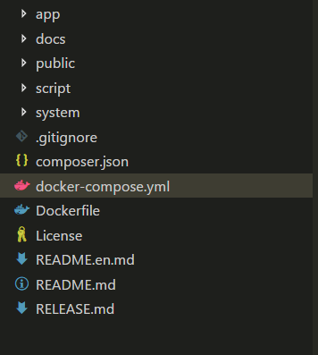
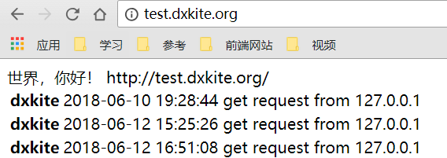
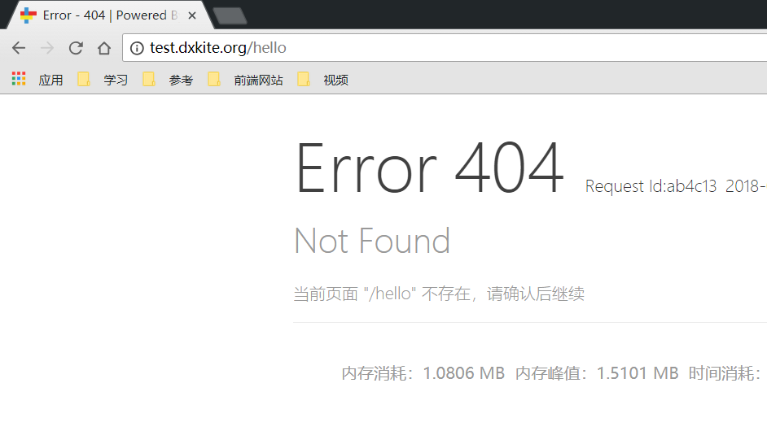

Suda - 02 创建一个页面
本文将介绍如何使用Suda框架创建一个简单的页面。
目录文件功能介绍
在创建页面之前，我先介绍一下框架目录下各个文件夹的功能以及作用。 经过上一节内容我们的目录结构应该是如下的结构：

如果不是，或者目录结构是如下样式，则进行一波操作：

调整目录结构
- 在目录下创建一个
suda文件夹，将所有东西拷贝到目录下，现在的目录应该只有一个suda目录。 打开 suda 目录，找到
suda->system->resource->project目录，将 project 目录下的东西放到当前目录下。现在的目录下应该有三个项目
- suda 文件夹
- public 文件夹
- .gitignore 文件
- 访问网站 host/dev.php ，将会出现上一节的页面。此时目录调整完毕。

目录说明
| 文件或者目录 | 说明 |
|---|---|
| suda 目录 | 该目录放置了框架的所有文件 |
| app 目录 | 该目录放置了网站应用程序的所有代码 |
| public 目录 | 该目录放置了一些用户可以访问到的文件以及静态文件 |
app 目录
在开发的过程中，我们最经常用到的目录就是 app 目录，在这个目录下，放置了我们网站程序的所有源码。
| 文件或者目录 | 说明 |
|---|---|
| data 目录 | 该目录放置了网站程序运行时所产生的文件 |
| modules 目录 | 该目录放置了网站应用程序的功能模块，每个模块包含了一个或者多个功能 |
| resource 目录 | 该目录放置了网站程序公用的资源文件 |
| share 目录 | 该目录放置了网站程序公用的代码文件 |
| manifast.json 文件 | 该文件描述了网站应用的一些属性 |
manifast.json 文件
该文件的默认内容如下，重要属性主要有两个 modules, reachable
1 | { |
属性说明
| 属性 | 说明 |
|---|---|
| name | 应用的名字 |
| language | 应用的语言 |
| modules | 应用加载的功能模块 |
| reachable | 应用可以使用的模块 |
其中，应用的模块放置在 app/module 目录下，现在只有一个模块 app，其中 suda 模块为内置模块
应用配置文件 app/resource/config/config.json
该文件包含了应用的默认配置：
1 | { |
属性说明
| 属性 | 说明 |
|---|---|
| debug | 开启Debug模式，默认开启，会被覆盖 |
| timelimit | PHP允许的最长运行时间，0表示无限 |
| timezone | 设置时区，PRC 中国 |
| markVersion | 显示版本头，在HTTP头部可以看到版本信息 |
| database | 数据库配置信息 |
如何创建一个页面
在框架中，所有的页面都依赖于模块而生存，我们来看看 app/modules/app 文件夹，也就是app模块，
其中，控制页面URL的文件在模块目录下的 resource/config/router.json 文件中。我们看看该文件的内容
1 | { |
该文件内包含了一个页面的路由，既访问 / 时调用 cn\\atd3\\response\\IndexResponse 类，本次我们就暂时不讲解调用类，现在就新建一个静态页面即可。
步骤1：添加一个页面模板
添加页面模板的位置在模块目录下：resource/template/模板名/，其中模板名用default作为默认的模板名，现在往里面加入一个HTML页面,文件名为 hello.tpl.html, 注意，扩展名：tpl.html
resource/template/default/hello.tpl.html
1 |
|
步骤2：添加URL引用
我们创建好页面之后，需要用URL来引用整个页面。在 resource/config/router.json
1 | { |
hello 为URL的名字，template 指定的为URL加载的模板，这里省略 .tpl.html ，url指定了访问时的URL
现在的目录结构如下

此时我们访问页面 ：domain.com/hello 我们会发现是404页面，原因是页面加载了缓存，减低性能消耗

现在我们需要实时访问。则访问：domain.com/dev.php/hello ，其中 dev.php 是开发时入口。会清理缓存并重新写入

由此，一个静态页面就加入成功了。